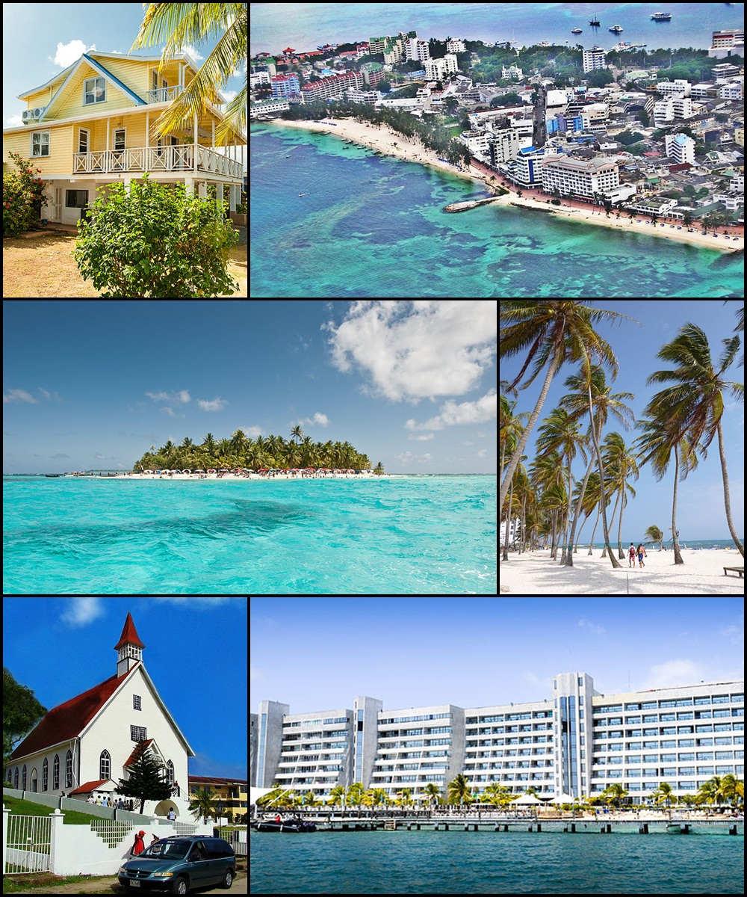
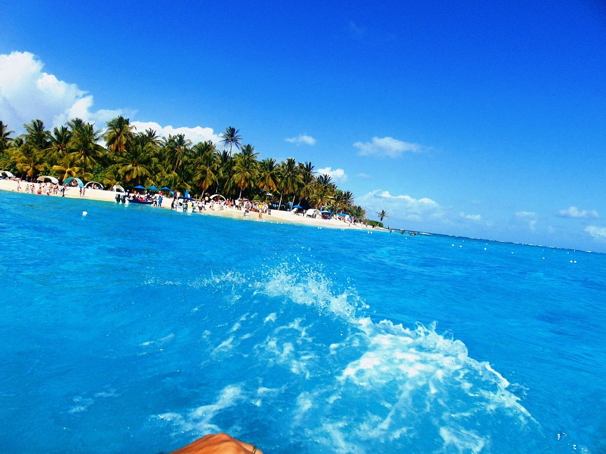
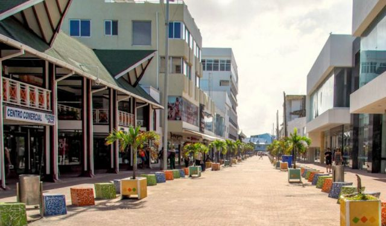

The magic plans we offer are:

1- Johnny Cay Aquarium
Enjoy a day in the Johnny Cay Aquarium. This activity begins
with visiting Johnny Cay to then move to Aqquarium
Cay at about 12 noon, where you will relish in the
Sea of Seven Colors

2- City Tour
A tour around the Island with an accompanying guide.
The first stop is at Creole Center, where you will have
the opportunity to take pictures and purchase souvenirs,
in addition to a visit to the Lookout on the hill and Casa
Museo Isleña, all aboard a small bus with air conditioning

3- Safari
This marvelous tour begins with a visit to the Botanical
Garden. Then, you can appreciate all the various plant and
tree species in addition to watching local birds. Climbing
up to the Garden's lookout provides a unique 360 degree view
of the Island. Continuing our safari, we will head to a Native
Farm or the Fresh Water Lake to observe the islanders' rural
life and see a different perspective of the Archipelago. To finish
the tour, we will stop at the Island's southern beaches for the
dip in the ocean.